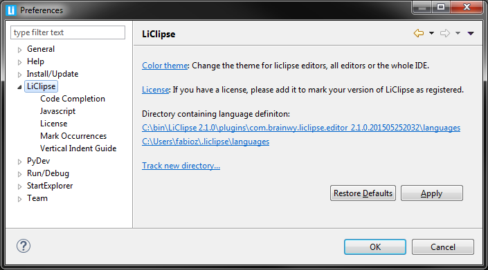

TextMate bundles integration
From LiClipse 2.1.0 onwards, LiClipse also supports TextMate bundles for its language support.
To install a bundle in LiClipse, download it as a zipped file, rename it to .tmbundle and place it in
one of the directories tracked for language definitions (the preferences page below shows the tracked
directories and provides a way to track new directories).

Note that many TextMate bundles are available at github, which provides a way to get a zipped version of
a repository, so, it should be a matter of downloading it and putting it in the proper place.
If you want to grab a bundle available in github from the command line, go to one of the tracked directories and execute
the command below (changing 'php' for the bundle name):
curl -L -o php.tmbundle https://github.com/textmate/php.tmbundle/archive/master.zip
Note that in LiClipse 2.1.0, the support provided for TextMate Bundles covers only syntax highlighting and snippets where the
scope matches the main grammar scope (future versions will improve on that...).